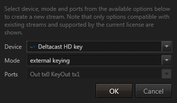

Table of Contents
- Ventuz Configuration
- Machine Configuration
- Introduction to the Video Engine
- AV Configuration
- Render Setup Editor
- Warping and Soft-Edging
Introduction to the Video Engine
It is important to note that the video engine actually includes a number of elements, including audio, live video coming from external sources, streaming video, video clip playback and the entire video output system. All audio processing inside of Ventuz is also handled by the video engine.
The configuration for all of the video and audio subsystems and routing is done in the Audio, Video and Hardware Device Mapping section of the Ventuz Configuration
Render Pipes
Ventuz theoretically supports an unlimited number of concurrent render pipes, but in the current structure, four simultaneous video pipes, or output streams, are enabled. These streams can best be described as render outputs. So, a GPU which supports 4 DVI outputs spanned to a single desktop will be one stream. An SDI channel with fill & key will also be one stream.
Importantly, Ventuz allows for complete flexibility to configure, mix and match different pipes, and these are handled independently from the Ventuz scene and scene options. Thus the same scene can run on dual channel preview/program SDI on one machine with a given set of hardware but on an iVGA program/GPU preview setup on a different machine with no alterations to the scene.
It is important to know that all configured output pipe must render and output on the same frequency (frame rate). Mixed frame rates, unsynced genlocks are not supported! The FPS setting of the AV Configuration defines that rate. All configured output streams uses that rate for their output formats.
Stream Modes
Every stream, depending on its hardware or software capabilities, can be configured to run in the following modes:
| Name | Ports | Description |
| Input | Input | Input |
| Output | Output | Output |
| External Keying | Output Key + Fill | Output two separate SDI Streams, one containing the alpha channel (key) and one containing color information (fill) |
| External Chroma Keying Simple | Output Key + Fill | As above, but combines foreground, background and garbage matte from separate layers and 3d scenes into a key+fill stream. |
| External Chroma Keying | Output 2xKey + 2xFill | Outputs 4 signals: foreground fill, foreground key, background fill and garbage matte as key |
| Internal Hardware Keying | Input + Output | Let the video hardware take the Ventuz rendering and key it onto an input signal using the linear hardware keyer of the board. |
| Internal Hardware Keying with Input | Input + Output | Let the video hardware take the Ventuz rendering and key it onto an input signal using the linear hardware keyer of the board. In addition, the input signal can be used as a texture in the Ventuz scene. |
| Internal Hardware Keying with Delayed Input | Input + Output | Let the video hardware take the Ventuz rendering and key it onto an input signal using the linear hardware keyer of the board. In addition, the input signal can be used as a texture in the Ventuz scene. The texture will be synchronized with the input keyed input, allowing seamless transition from the keyers input to 3d rendering. |
| Internal Software Keying | Input + Output | Do the keying with the Ventuz 3d engine instead of the hardware. This allows to paint directly over the input signal, not having to care about generating correct alpha/key information. The input can also be used as a texture. |
| Internal Software Chroma Keying | Input + Output | As above, but the input is run through a chroma key. Also combines foreground, background, garbage matte and chroma keyed input into a single output stream. |
Preview
When rendering to SDI devices, a preview is shown in the Ventuz window. The Preview here refers to quality, not a preview in the sense of previewing the next graphical element that is going to appear on-air. It is only an additional output of the signal sent to the SDI board.
The rendering will be scaled to fit into the window, introducing additional artifacts and defeating multi-sampling.
The Preview window is not synchronized to the actual SDI board. The SDI board has its own timing hardware. Animation or videos may stutter, because they are synchronized to the SDI output - not to the graphics board (and thus the preview window). Also tearing effects may appear.
Interlaced video formats are displayed progressive: a 1080@25i format will be display as it would be a 1080@50p format, because Ventuz always renders progressive frames internally.
Naturally, the rendering will look perfect on the actual SDI output.
Video Inputs
Ventuz will support as many concurrent input devices and streams as the hardware and operating system allows. So while in theory it would certainly be possible to trigger hundreds of video clips and live video streams simultaneously within Ventuz, no hardware currently would be able to handle that. The performance of the engine scales with the hardware it is running on. Regardless of the source of the inputs, whether that be an SDI board, a video clip or a webcam – they all are routed and processed, together with audio, through the video engine.
Bit-depth and controllable quality/performance balance
Ventuz, by default, renders at 8bit per RGBA channel. However, it supports up to 32bit per channel natively. This includes highly accurate and performant algorithms for color space conversion and bit depth conversion. This means that Ventuz is capable of loss-less video processing including handling out-of-gamut colors.
A 10 bit YUV signal gets converted to 16 or 32 bit RGB, processed by Ventuz, and back-converted to 10 bit YUV. With 32 bit RGBA, all pixels will be reconstructed perfectly. At 16 bit, out of gamut colors are clamped to the RGB color space.
Software Watchdog
Input and output queues compensate short processing spikes. The more delay can be afforded, the longer the spikes can be without dropping any frame. (see Extra Buffers)
Ventuz can be configured to disable video processing automatically when the queues threaten to over- or under-run. In disabled mode, the video signal is passed without video processing, but still with the same delay, so seamless switching from full processing to disabled mode is possible. (internal keying modes)
Similarly, when switching scenes or projects, Ventuz might drop a few frames as new resources are loaded. A smooth transition can be guaranteed by manually disabling video processing before such operation and re-enabling afterwards.
This is useful for the various keying modes with Disabled Content set to Transparent. When the software watchdog detects that frames are about to be dropped, it provides transparent frames to the keyer, or in case of internal software keying the input frames are sent to the output unmodified. The fill will disappear but the background will not drop.
When using the Internal hardware keying with input and delay, the software watchdog must be enabled.
Hardware watchdogs control physical bypass relays which serve as last line of defense against power failure and forced reboots. In such cases, the video is simply passed through on the board.
Software Keying
Traditional keying requires a key and fill signal, which is then keyed either externally or on the video board to a video stream.
With software keying, Ventuz can render directly on to the input video, relieving the often tedious and arduous requirement of generating the correct alpha channel or key.
A seamless transition from zooming, stretching and 3-dimensional transformation, to just passing through the unmodified signal is easy. Thus Ventuz can be used as an extremely capable and flexible DVE video processor.
Multiple Sources from Multiple Vendors
The Ventuz Video Engine can mix different boards from different vendors, including Deltacast, Blackmagic and DVS (see Vendors). Video signals can be synchronized to the rendering or asynchronous. For instance, one can use a high quality broadcast board for in- and output of the main video stream and add additional input signals with cheaper hardware.
Similarly, other sources, such as streaming video or iVGA, clips or DVI capture boards can be added, mixed and matched.
SDI 3G
To transmit a 1080p60 signal with SDI you need more than the 1.5 GBit/s a SDI-HD cable can handle. To do so, you can use two SDI-HD cables (dual link) or a single SDI-3G cable.
The SMPTE ST 425-1 standard about SDI-3G specifies Level A and Level B, which are incompatible to each other. Level A is a "proper" SDI stream while Level B emulates dual link by using two multiplexed streams over the same cable. When creating a stream, you must specify the level.
4k
We use the term 4k to describe SDI signals with a resolution of 3840x2160 or 4096x2160 and a refresh rate of ~23.98 to 60.00 fps. 4k is always progressive.
There is no standard for 4k yet. As of Ventuz 4.4.0 we support 4k for some devices by Deltacast and BlackMagic.
Deltacast adopts the common technique of bundling 4 HD or SG links at 1920x1080 or 2048x1028 to one 4k stream. HD is used for refresh rates up to 30 fps, 3G is used for refresh rates above 30 and up to 60 fps.
Each link carries a quadrant of the image. There is nothing special about the individual links, if you swap two links the quadrants are swapped, as there is no marker to put things together correctly. The individual links are compatible to normal SDI equipment, for instance one can use 4 HD/3G hardware keyers to key a 4k stream.
Since a quad-link 4k signal is indistinguishable from 4 separate HS/3G signals, see Auto-Detect 4k Modes in the Device Options section about telling Ventuz how to decide when such signals are detected.
BlackMagic transports 4k signals up to 30 fps either as a proprietary 6GB/sec signal or as two 3G links. As of today these signals can only he used with other BlackMagic devices and the individual links of the dual 3G signal can not be processed independently, like one can with the 4k quadrants.
Chroma Keying
There are the following chroma keying modes:
- External Chroma Keying
- External Chroma Keying Simple
- Internal Software Chroma Keying
When one of these modes is active, The Ventuz scene is rendered in 3 ranks:
- Default (Background)
- Foreground
- Garbage Matte
Each layer can be assigned to one of the 3 ranks. Also inside a 3d layer, parts of the hierarchy can be filtered to be in one of the 3 ranks. The ranks are rendered independently.

| |
| Setting rank in a layer | Setting rank with filters in a 3d hierarchy |
In Internal Software Chroma Keying, Ventuz adds a chroma keyer to the video input. Then the garbage matte is used to cut away parts of the input that might not be covered by greenscreen. In a trackless environment a masking image will suffice, in a tracked studio a 3d scene containing simple virtual boxes around where the physical greenscreen is can be used to mask out the borders of the greenscreen while the camera moves.
The four signals, input, garbage matte background and foreground are composited properly to form the final image.
The External Chroma Keying Simple mode is intended to provide one fill and one key signal to a simple external chroma keyer. Again the three ranks (background (fill), foreground (key+fill), garbage matte(key)) are rendered. These images are composited to a key+fill stream, the key containing the foreground key and garbage matte key, the fill containing foreground fill and background fill. This can use used in an external chroma keyer. It will create some problems with transparencies in the foreground, but usually it suffices.
The External Chroma Keying outputs the three ranks as four individual signals. The foreground fill, foreground key, background fill and garbage matte as key. These four signals can then be composited in an external chroma keyer.
Comprehensive Audio Mixing
Virtual audio cables can be routed from any video input or Windows audio input device to any other video output or audio output device. Each cable comes with delay, volume and balance control.
Each stereo pair is handled individually, so routing from input 1 channel 5/6 to output 2 channel 1/2, or routing a 5.1 signal by using 3 stereo pairs is simple.
Ventuz can add sound clips or sound from video clips to the mix, or analyze sound from input sources. Similarly, audio can be delayed or compensated in order to match video or other delays.
The delay is for more than just adjusting for video input processing times. For some video formats, the number of samples changes from frame to frame, and input and outputs may be in a different position in the cycle of changing sample counts. For asynchronous streams, additional buffering is required. The delay will calculate a small but safe amount of buffering dependent on various attributes of the streams.
The virtual audio cables operate in stereo pairs. Each input or output has its certain number of stereo pairs (e.g. SDI has 8 pairs), and via the routing in the AV Configuration editor, the delays can be mixed and matched from input to output extremely flexibly.
An audio routing can handle multiple cables per input and output, with smoothing to prevent clicks or popping when changing volume or panning.
All audio processing in Ventuz is done at a sample level at 48kHz, and conversion to other sample rates is handled within the ffmpeg engine. Because Ventuz works with stereo pairs, 5.1 or devices with more outputs are simply divided into stereo pairs. Similarly, mono devices are converted into a stereo pair.
Video Setup independent from Ventuz Scene
The Ventuz Machine Configuration allows a Ventuz Scene to be independent from the hardware used. If the designer has a different hardware setup than a runtime engine, or multiple runtime machines are different, each machine can be configured so that the same Ventuz Scene will access the right video ports and other resources.
AV Configuration
The AV configuration has four sections:
- Video : Create video streams. Some video streams also carry audio.
- Audio : Create audio streams
- Cross Points : Connect audio inputs and Ventuz audio sources to audio outputs or Ventuz audio analysis.
- Mapping : Map the created streams to the two render pipes in Ventuz.
A list of the supported video devices with product specific information can be found here
Video Outputs
It is best to specify the frame-rate before creating any output streams. This is done with a drop-down box just above the Outputs window.
The AV Configuration editor displays all supported devices if they are found on your system. The current Licensed Output Options may deny the creation of certain streams! The Ventuz PLE version has no restrictions - all devices can be tested without a purchased license but the output will be branded with a Ventuz logo.
Video output streams are added by dragging a device from into the Outputs window. When doing so, a dialog pops up that allows users to specify some options:
- Device lets you change the device.
- Mode specifies the mode. See Stream Modes.
- Ports: Select the physical connector use.
In DirectX Output Mode only one output is supported since Ventuz always runs on a single GPU/Adapter. Combinations between DirectX-Fullscreen and SDI, for example, is not possible!
When configuring multiple inputs and outputs on the same card, arbitrary hardware limitations might reduce your choices.

If the configured output streams are only of type Shared Surface the outputs will be branded with a Ventuz logo if no appropriate License is available.
Enable 10bit (DirectX-Mode)
Ventuz, by default, renders at 8bit per RGBA channel but based on the connected Display and GPU you can also output in 10bit color depth in DirectX Mode. This is automatically distinguished based on the Desktop configuration and therefore there is no need to change the Ventuz configuration. Therefore to enable 10 bit output simply configure it inside your Graphics Driver Settings.
Nvidia Control Panel | AMD Catalyst Control |
|---|---|
|
|
Changing the color depth to 10bit is not for free and can cause performance issues.
Video Inputs
Inputs are dragged into the Inputs window just like outputs are dragged into the Outputs window. There is only one mode: input.
Some output modes come with inputs, in this case these inputs automatically appear in the Inputs window. The option for these dual input/output streams are mirrored.
These inputs can be used in Ventuz with the Live Video node.
The video format of inputs can be configured independent from the video format of the outputs. For best results, the frame rate should be the same as the output and all signals should be genlocked together.
Most video boards support Autodetect mode. Should the video mode of an autodetect input switch, the video engine will synchronize on the new signal. If the video board is not in autodetect mode, it will report signal lost until the stream switches back to the configured video format.
A list of available formats can be found here, but not all boards support all formats.
Video Options
Once the stream is added, some options can be changed. The available options depend on the Mode and the capabilities of the device.
Many of these options can be manipulated with the Live Options window without restarting Ventuz.
Standard Options
Format: The video format. Output devices can only choose formats with the frame-rate configured in the FPS setting of the AVConfiguration. Inputs can use any frame-rate, but for best results all streams should use the same frame-rate. Input streams may offer Auto Detect as video mode. Some devices allow PC as format, then resolution, frame-rate and interlace must be specified manually.
Border Color: (Live Option) The color used for letter-boxing / pillar-boxing and bezels in video-wall setups.
Effect Bleed: The Effect Bleed adds an extra margin around the rendered content. The value is the amount of pixels added to all four sides. It will not extend the visible/physical output, but will allow layer effects to create better results close to the output border or across machine borders in Cluster Setups.
Frame Format: PC-Streams need manual specification of resolution, frame-rate and interlacing.
Pipe Usage: Defines if the output (Pipe) should behave as Preview or Program. Use Automatic if you do not want to overwrite the default behaviour.
Alpha Out: (Live Option) defines how the key signal is generated.
| Option | Description |
| Straight | Non-Premultipled, as most common image formats that allow for alpha (png, bmp) |
| Premulitiplied with lifted Alpha | where the alpha value is larger than any color value, the alpha value is lifted. |
| Premulitiplied with additive Headroom | The alpha value is allowed to exceed the red, green and blue values. Ventuz uses this to create glare and bloom effects that brighten the image without darkening the background, unfortunately most other software can not deal with this. |
Mipmaps: Input streams can automatically create mipmaps. Mipmaps are only useful if the incoming video is displayed either in 3D or smaller than 50% of its native resolution.
VShift and HShift: (Live Option) Some video capture boards allow shifting the captured image horizontally or vertically.
Multisampling: (Live Option) Output streams allow for specifying multisampling quality.
Multisampling only affects the edges of geometries. It does not affect the quality of textures, texture based text or live video textures!
- None : No multisampling applies.
- Medium : Selects the mid range (Best/2) of available multisampling quality levels.
- Best (default) : Selects the highest available level of multisampling quality.
Select None multisampling for scenes consisting of texture and Text 2D based fonts only or if the displayed graphics is a 2D design. Multisampling would not improve the quality but it will lower the rendering performance. Except when using the plain layer and High Quality 2D Text Rendering is disabled. Non-high-quality relies on multisampling.
Virtual Fullscreen: (DirectX output only) The fullscreen mode is the common rendering mode for Ventuz. The entire screen is used to display the rendering output. The advantage of this mode is that no other windows can overlap the rendering and the system only displays the presentation instead of other Windows related elements. There are two different types of the fullscreen mode:
- Exclusive Fullscreen
This type is the most common mode used. The graphics card is locked exclusively to the Ventuz application and offers the best performance results. The exclusive mode is exited and the application gets minimized if another application receives the input focus. Therefore it is highly recommended to disable all background processes (e.g. anti-virus software or auto update services) which could steal the focus during the presentation. - Virtual Fullscreen
A virtual fullscreen looks like an exclusive fullscreen but is actually a windowed mode where the entire screen gets occupied by a single borderless window. This type is often used during the design phase of a project, because it allows the user to activate another application (e.g. content creation software) and steal the input focus without having to re-initialize the renderer. A virtual fullscreen remains on screen and is not minimized as the exclusive type does. The disadvantage of this mode is a lower performance compared to the exclusive fullscreen.
Show Mouse Pointer: (DirectX output only) This option defines whether the mouse pointer is visible over the rendering area in Fullscreen mode or not. MultiTouch or keyboard controlled presentations usually hide the pointer because it is not needed.
Swap Sync: (DirectX output only) If additional synchronization hardware for framelock/genlock is installed, this option enables the Swap Sync in Ventuz. See GPU Vendors
Prevent D3D Queuing : (DirectX output only) This option is a little trick from the gaming industry to force the driver to only render one single frame in advance. This keeps interaction delays low and allows the cluster clock interchange algorithm to work properly. Enabling this option will lower the entire render performance by approx. 3-5%!
Frame Rate Multiplier: Multiplies the globally set frame rate for internal calculations. Used in cluster setups with mixed frame rates.
In DirectX output mode, the rendering always occupies the entire selected adapter by using the size and refresh rate of the desktop. Ventuz does not change any settings on the graphics regarding size, rate or multi-monitor setups (Span Modes, Mosaic, Eyefinity, etc).
The global FPS value is used to override the refresh reported by Windows against another custom value. This affects only the timing inside Ventuz, not the actual refresh rate of the graphics board. Setting FPS to None will use the refresh rate reported by Windows - this may differ from the actual rate!
Advanced Options
RGB Format: The quality of the Ventuz rendering. This is especially important when using the internal software keying mode and the original YUV signal must be reconstructed perfectly.
| Setting | Speed | Quality |
|---|---|---|
| 8 bit integer | high | minor quality loss for 8 bit YUV, big quality loss for 10 bit YUV. |
| 16 bit integer | medium | 10 bit YUV can be reconstructed perfectly, but out of gamut colors can not be reconstructed. |
| 32 bit float | slow | 10 bit YUV can be reconstructed perfectly, including out of gamut colors. |
Software Watchdog Enable: (Live Option) Enables the software watchdog for this stream.
Disabled Content: (Live Option) Select what should happen when the software watchdog kicks in or an input stream has no signal.
| Setting | Fill | Key |
|---|---|---|
| White | white | solid (100%) |
| Black | black | solid (100%) |
| Transparent | black | opaque (0%) |
| Last Frame | last frame | last frame |
| Color Bars 100% | color bars 100% | solid (100%) |
| Color Bars 75% | color bars 75% | solid (100%) |
Enable Ancillary Input switches on ancillary processing for input streams. This allows to read time-codes and active format descriptor information from the live video node. See Video / Live Video node.
Audio Input Gain, Audio Output Gain: (Live Option) Gain for audio associated to this stream. The same gain is applied to all channels.
Clamp...: (Live Option) Video signals using YUV can be clamped to a certain range. Values are always specified in the 0 to 1023 range of 10 bit. if the stream uses an 8 bit YUV buffer, values are internally converted to 8 bit. If the stream uses an RGB buffer, this option is not available.
Synchronized: If it is known that input our output streams are genlocked together, these streams should have this box checked. This will ensure that Ventuz waits on all streams before committing to render. By default, output streams are synchronized and input streams are not.
No Genlock: Configure the board to ignore genlock signal for this output stream.
Low Latency and Extra Buffers: In low latency mode, Ventuz reduces the number of frames that are buffered to a minimum. This is not recommended for complex scenes. In both low latency and normal mode, extra buffers can be added to increase tolerance against frame drops. For example: If Ventuz has no problem rendering fast enough, but for some reason one rendering takes 4 frames, with enough buffers, the output will continue smoothly, and after the "hiccup" Ventuz has time to slowly fill up the queue again. See also software watchdog.
Input Frame Delay: (Live Option) For Deltacast boards, input streams can be delayed. This is useful when working with tracking systems to match the tracking delay. You have to add extra buffers to be able to use this feature, if you have 3 extra buffers you can delay by 3 frames. With the default of zero extra buffers, no input delay can be set. The extra buffers must be set before starting Ventuz to allocate the "headroom" needed for the delay. Then the input delay can be changed on the fly.
Board Format: Most boards can operate in different buffer formats, like 8 or 10 bit YUV. This option configures Ventuz to prefer quality or speed when choosing a buffer format. Speed should only be an issue when operating many streams on the same device.
Flip Vertically: (Live Option) Some Webcams might have the image flipped vertically, use this option to correct.
Video Device Information and Options
Each video device has two little buttons when hovering over the device icon.
The little 'i' will open a box with information about the hardware.
The little gear-icon will open a device configuration dialog. The selection of available options depends on the kind of the device and it's capabilities.
Available options are:
Genlock Source: Select the source for the genlock. Most SDI-boards support SDI-inputs and a special reference signal inputs. To disable genlock choose internal.
Genlock Format: Select the format of the genlock signal. Usually the genlock will lock on a signal much faster if it is not in Auto Detect mode.
Genlock H Offset and Genlock V Offset: (Live Option) This allows to offset output streams from the genlock signal. When the Genlock Format is not known, some boards only allow vertical (pixel) offset and no negative offsets. If the format is known, Ventuz can automatically convert (possibly negative) H & V offsets into a positive vertical offset independent from the boards capabilities.
Watchdog Timeout: (Live Option) Set the hardware watchdog of the device. The value is in milli-seconds. 0 disables the hardware watchdog. Do not confuse this device feature with the software watchdog.
Multi Channel: DVS boards can be switched between single and multi-channel modes. This usually happens automatically, but if there is some confusion, set it manually.
Video Norm Input X: Deltacast DVI capture boards require manual specification of the kind of signal to expect.
Preserve EDID: This tells Deltacast DVI capture boards to preserve a pre-programmed EDID (monitor id). This allows to use the Deltacast E-EDID tool to program an EDID into the board, and it will not be overwritten with a default EDID.
Verify Frame Rate: This is for Video for Windows inputs (like Webcams). When auto-detecting a signal, this verifies the frame rate. This is recommended, but disabling this may sometimes help locking on to input signals that are otherwise refused.
Auto-Detect 4k Modes: Some SDI boards receive 4k streams as quad-link HD or quad-link 3G streams. Unfortunately there is no standardized marker to distinguish a quad-link 4k streams from 4 normal streams. Normally, Ventuz will interpret a quad-link 4k stream as four independent streams. With this options Ventuz will assume that 4 identical streams will form a quad-link 4k stream if possible. Some streams can not form quad-link 4k, like interlaced or SD streams, these will still be handled as individual streams.
Color Sampling: for BlackMagic HDMI capture, specify if the input is YUV 4:2:2 or RGB 4:4:4. This is not required when using Autodetect.
Global Options
Currently, there is only one global option, the Software Watchdog Timeout. A value of 0 means that the software watchdog will disable the stream and show disabled content when an input queue overflows or an output queue runs dry. Larger values will delay the watchdog by the specified number of milliseconds. Sometimes it is better to drop a frame than to disable the stream totally.
The timeout for the software watchdog is a global option. Do not confuse this with the timeout for the hardware watchdog, which is a board option.
Live Status
By pressing the Log button in the live options the current status of all streams (audio & video) is logged in the message window.
This information is only visible if the message level is set to info or debug. The message level can be set using the right mouse button popup menu.
For each stream, the name and some information is printed:
Status : the state of the stream. The following states are possible
| Ready | waiting for input signal, ready to go |
| Presync, Syncing | stabilizing stream, synchronizing multiple streams together |
| Running | stream is running normally |
| Disabled | disabled either by the Live Video Node or by the software watchdog. |
| Bypass | bypass relays activated |
| Error | some error condition, see log for details. |
Queue : The number of frames queued and the length of the queue. This should be a low number for input streams and a high number for output streams. If Ventuz is temporarily to slow, the input queue fills up and the output queue dries out. If Ventuz recovers in time and renders fast enough, input queues will slowly be emptied and output queues get filled, no frame will get duplicated on the output and no frame will get dropped from the input.
Board Format : When creating the stream, the video engine can be configured to prefer either speed or quality. This effects the selection of a buffer format to be used for sending and receiving data to the video board. What format is actually chosen depends also on the hardware capabilities and if an alpha (key) channel is required.
| Name | Bits Per Pixel | Comment |
| YUV422 10 bit | 21.3 | best quality |
| YUV422 8 bit | 16 | best speed |
| YUVK4224 10 bit | 32 | best quality with alpha |
| YUVK4224 8 bit | 24 | best speed with alpha |
| RGBA 8 bit | 32 | used as quality option when YUVK4224 10 bit is not available |
| RGB 8 bit | 24 | used for some webcams (windows media foundation devices) |
| YUV422 8 bit with separate alpha | 24 | used for iVGA, same quality and speed as YUVK4224 8 bit |
Generally, RGB(A) is slightly better then 8 bit YUV(K) but worse and as slow as 10 bit YUV(K).
Buffers : The number of buffers allocated
Delay : The nominal delay of the stream. There are up to 3 kinds of delay:
| Input -> Ventuz | The delay from input to the Ventuz renderer |
| Ventuz -> Output | The delay from the Ventuz renderer to output |
| Input -> Output | The delay from the input and the output |
For instance, in the internal hardware keying without input mode, the delay from input to output is typically zero or one frame, while the delay from Ventuz to output is typically 3 to 4 frames. A zero delay is of course impossible, the deltacast keyer for example will shift the signal by around a hundred pixels. This counts as zero frames.
Audio Devices
The Audio section displays all pure audio devices available in the system along with their supported streams (input and/or output). Simply select the streams you want to use. The default Windows input and output streams are marked with the text (Default).
If portable devices such as USB headsets or USB speakers are used Ventuz will reports errors if the device is turned off or has been disconnected prior start-up of Ventuz. Some devices may change their stream configuration depending on the connected physical cabling. In such a case Ventuz will also report a missed stream on start-up.
Cross Points
In the Cross Points section, audio inputs and outputs can be connected. Such a connection always works on a stereo pair. A typical SDI device has 16 channels, and therefore 8 pairs. A sound-card configured for stereo has one stereo pair, one configured for 5.1 surround has 3 stereo pairs. In this manual the term Cross Point is also referred as Cable. These two terms are identical!
The Web Browser always outputs on the default Windows Audio device. Sound played by the Web Browser is not passed through the Ventuz Video Engine and is unable to be routed to SDI or other supported devices.
Note that ASIO devices are always listed with 8 stereo pairs regardless of the actual physical number of pairs. When trying to access a non-existent pair Ventuz will log an error message. This is necessary since many ASIO drivers need exclusive access to read device information.
Stereo pairs are named A, B, C and so forth. Where A maps to the channels 1 and 2 (also referred as 1/2), B to 3/4, etc.
To enable Ventuz to interact with the audio a virtual Ventuz device exists. It provides 8 Record and 8 Playback stereo pairs. If Ventuz needs to receive audio from a stream (e.g. for the FFT Audio Analysis a cable from that stream has to be connected to a Record pair of Ventuz. If Ventuz outputs audio a Playback pair must be connected to the desired output stream or output streams. Any audio related node in Ventuz selects the Record or Playback pair to delegate the audio. The wiring defines how the audio is routed.
By default the Use custom crosspoints check box is unchecked. In that case Ventuz automatically subsequently connects the first stereo pair of all configured audio and video stream to the Ventuz Record Pairs. And all available audio outputs on all audio and video streams to the Ventuz Playback Pairs. All automatic cables are grouped is a single cable-group called Default. If the Use custom crosspoints is checked that cables have to created manually.
Ventuz works like a giant matrix mixer. Any input stereo pair can be mixed to any output stereo pair. In practice usually only a few such cross points are needed. Each line in the configuration represents one cross points. Each cross points consists of an input device with stereo pair and an output device with stereo pair.
Cross Points (or cables) are combined named groups. Inside Ventuz, the volume and stereo panning for each group can be automated by using the Volume Control Node. If many stereo pairs have to be automated in parallel, grouping them and giving the group a descriptive name can avoid confusion.
Please make sure that only one Volume Control Node controls a group at a time. Concurrent controlling would cause unexpected behavior. The rules here are last-in-last-out; the last access to the group in the current frame will set the parameters. If concurrent access happened within one render cycle a silent warning message will be logged.
Each cross point has its own Delay value. Although the default value is 0 it doesn't mean that there's no delay on the audio. The Ventuz Video Engine takes care about the minimum audio delay required to be in-sync with the video output. The user can adjust the delay value in milliseconds, but as long the actual minimum delay is not exceeded no additional delay will apply. The minimum delay depends on the entire structure of configured streams and is currently not displayed to the user.
Crosspoints Example: Adding Ventuz to SDI
Let's assume we don't have a hardware keyer (internal or external) that supports audio mixing. In this case, we must use the software keyer. This example shows how to pass through a 5.1 audio signal (not Dolby) from SDI in to SDI out and add stereo sound effects from Ventuz.
The AV config for such an situation looks like this:
We have two groups: the first group (LoopThrough) loops the SDI audio input to the SDI audio output. The second one (SoundEffects) adds Ventuz audio in stereo to the SDI output. The volume of each group can be controlled with the Volume Control Node. For instance, one could duck the SDI loop-through before playing sound from Ventuz.
A common mistake is trying to loop SDI output through Ventuz. This will not work. Imagine working with normal audio equipment. Ventuz audio output is like a synthesizer. To add a synthesizer to the mix, one does not loop the signal through the synthesizer, the synthesizer is just connected to the mixer.
The SDI input is like a microphone input, and the Ventuz output is like the output of a synthesizer. This is confusing. Instead of thinking in terms of inputs and outputs, think in terms of audio sources (left side of the cross-points window) and audio destinations (right side), from the perspective of a matrix mixer. So the Ventuz output is an input (source) to the mixer.
Device Mapping
The previous areas of the AV Configuration defined audio and video, input and output streams. These streams as well other physical devices and logical devices (Ventuz virtual audio device) have to be mapped to the Nodes used inside a Ventuz scene.
The AV Configuration defines the physical order of all configured audio and video streams as well crosspoint groups, where Windows defines the physical order by the system's hardware enumeration API's.
The Mapping maps this physical order to a logical order used by Ventuz nodes. A Ventuz node that accesses a stream or device uses a so called Device Ordinal - a zero-based index that is passed through the Mapping for being resolved to the physical index of available devices. By default a one-to-one mapping is configured, so a logical device ordinal 0 maps to the physical device index 0, 1 to 1, 2 to 2, ..., 900 to 900. The mapping list is endless: every index is mapped to another one. If the physical device list has no device at its index - no device is returned and the node won't receive any input or won't output its data.
The endless mapping defines that even if for example no entry is visible at the 21st rows the 21st logical device ordinal will be mapped to the 21st physical device!

Logical Device Ordinals can be mapped to the following device and stream types:
Type Description Ventuz Nodes Video Input Video Input streams Live Video Audio Record Ventuz Record stereo pairs FFT Analysis Audio Playback Ventuz Playback stereo pairs Sound and Audio, Movie Audio Crosspoints Audio Cross Point groups Volume Control MIDI Input MIDI input devices MIDI Input MIDI Output MIDI output devices MIDI Input Serial COM Serial COM interfaces Serial Text Gamepads Gamepads or Joysticks Joystick
Depending on the number of configured output pipes (video output streams), the device mapping shows one or two colums of mapping entries - one for each pipe. As said, the default mapping maps all indices one-to-one - the editor only displays the same number of rows as physical devices exist for the selected device type. You can add more rows but as long as these rows do not change the default one-to-one mapping they won't be saved! If the configuration is loaded in the editor later these rows will be gone.
Example
To configure the two output pipes so that each of them has its own live video input as its first device (ordinal 0) use the following mapping. Please note that the second row (ordinal 1) contains a NONE entry for both pipes, because the endless mapping would map ordinal 1 to device 1 if no explicit entry exists for ordinal 1. In this case both pipes would resolve to device 1 (Deltacast HD key input In rx1) on ordinal 1.
Multiple Logical Device Ordinals are allowed to map to the same Physical Device. Simple add a new row and select the physical device again.
Logical Device Ordinal can also map to a NONE device. No device will be address and the node will operate without device (no physical input or output)
The Reset button next to the device type selector resets all mapping entries. A list of all existent devices will be shown in the same order as they appear by the enumeration. A one-to-one mapping for all output pipes is the default mapping.